Seeing is Believing
Assignment Overview
In this assignment, we dive into examples of computational design, in both natural and human-made examples. We also explore researchers and designers whose work embodies the principles of generative and computational fabrication.
Task 1: Computational Design in Nature
Subtask 1.1: Botanical World — Fibonacci Spirals in Sunflowers
The arrangement of seeds in a sunflower head is an example of
computational design in nature. The seeds follow a spiral pattern
often referred to as the Fibonacci sequence (or golden spiral).
This spiral maximizes packing efficiency for the seed shape and size, ensuring the plant utilizes
available space for optimal seed growth.
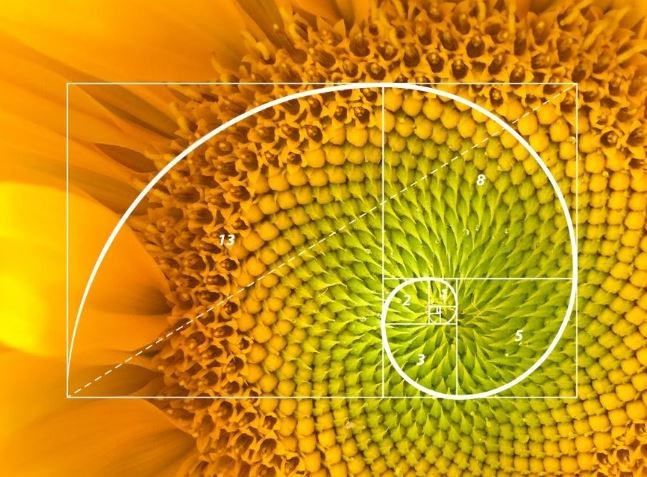
The pattern can be modeled using
parametric equations or algorithmic rules that reflect
the plant’s growth process.
Subtask 1.2: Zoological World — Nautilus Shell
The nautilus shell is renowned for its beautiful logarithmic spiral growth pattern.
This spiral allows the nautilus to maintain its shape as it grows, with each new chamber
being a proportionally scaled version of the last. This precise geometric progression also follows
the golden ratio.
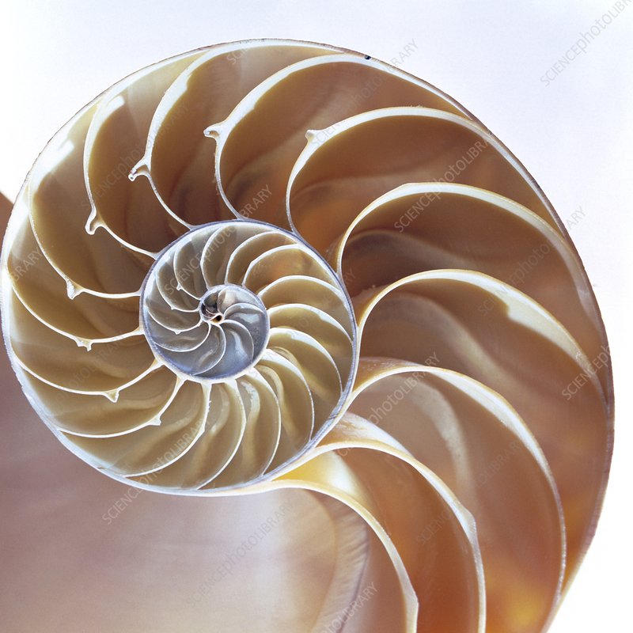
Subtask 1.3: Environment Built by Organisms — Termite Mounds
Termite mounds are sophisticated structures incorporating vents and
tunnels that maintain stable internal temperatures. The mound’s shape
and ventilation system result from a complex feedback process among
thousands of termites, each following local rules.
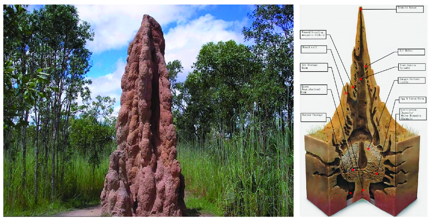
Task 2: Man-made examples of Computational Design
Subtask 2.1: CFD in Commercial Aviation
The modern aviatation industry is a never ending competition for maximizing profit margins and
efficiency. As a result, present-day aircrafts such as the Boeing 757 rely heavily on sophisticated
computational fluid dynamics to maximize aerodynamic efficiency, cutting fuel costs and increasing flight
speeds.
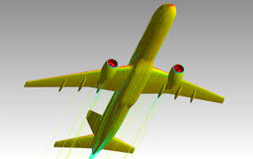
Subtask 2.2: The Sagrada Família, Barcelona
Antoni Gaudí’s Sagrada Família incorporates a hybrid of computational
thinking, designed and fabricated long before modern computers. Current architects use
parametric software to complete Gaudí’s vision, employing advanced
geometry to craft the cathedral’s intricate forms. The columns and arches within
La Sagrada Familia are designed to mimic the way trees branch to support their canopy.
This optimization minimizes material usage while maximizing structural integrity, principles
now central to computational design and sustainability in architecture.
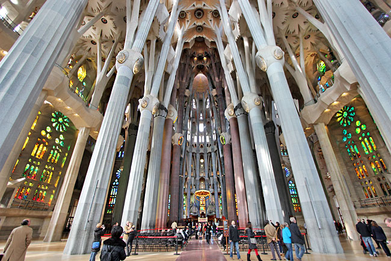
Subtask 2.3: Czinger 21C hypercar
A quintessential modern-day example of the potential of computation algorithms, this mostly 3D-Printed
vehicle is just as much eye-candy as it is innovative. Most components in this $2 million hypercar
are optimized using advanced algorithms. As a result, the exhaust, linkages, and structural components take
on an alien and biological appearance.
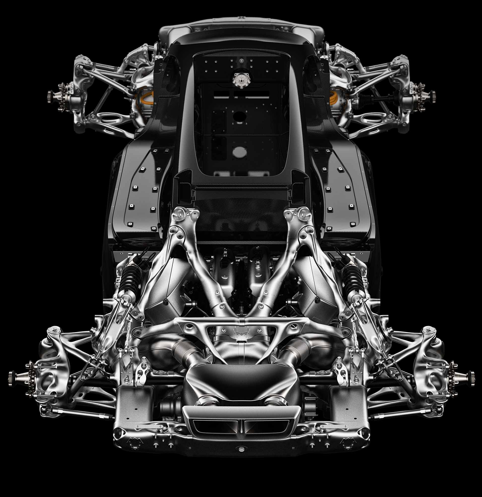
 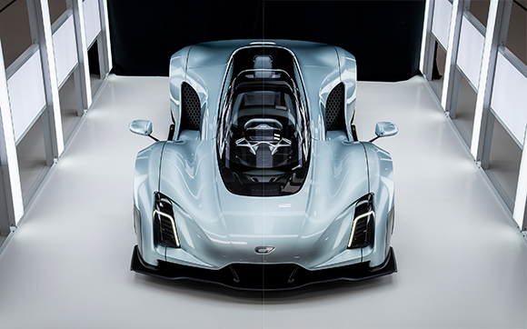
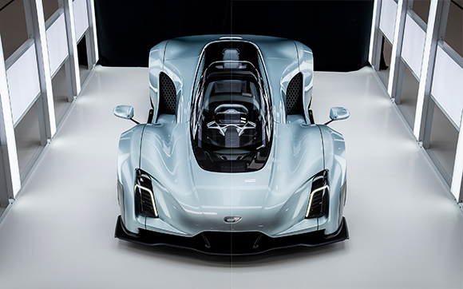
Task 3: Researchers/Artists/Designers of Computational Fabrication
Subtask 3.1: Twitter Account @PAACADEMY
This design collective self identifies as a creative outlet in disciplines including
"Architecture + AI + Midjourney / Parametric + Computational Design / 3D-Printing + Robotics / Metaverse + VR/AR"
Their content is highly interesting, often containing futuristic and biologically influenced
building designs, and computational additive manufacturing.
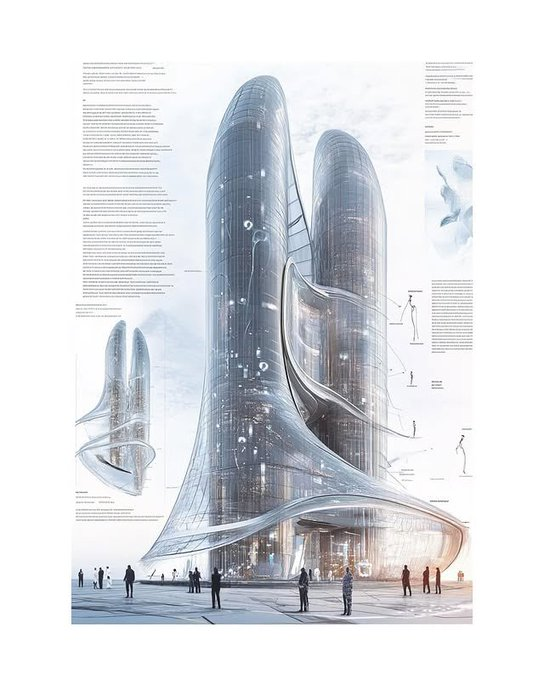
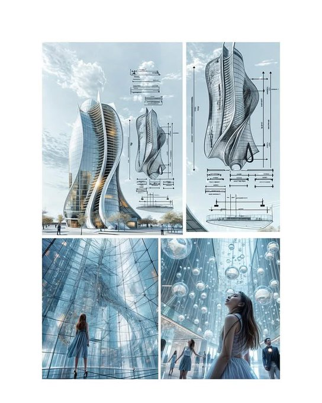
I find their content interesting purely for the visual aspect. As a sci fi reader (and Dune superfan), I enjoy
consuming futuristic looking artwork that incorporates real engineering principles and biomimicry.
From what I can tell, their processes often include AI unfluence, as well as physical 3D printing (including
with concrete).
Subtask 3.2: Archim Menges
Achim Menges is a German-born architect who's work is a visual spectacle of computational design.
He is the director of the Institute for Computational Design and Construction at the University of Stuttgart.
BUGA Fibre Pavillion 2019
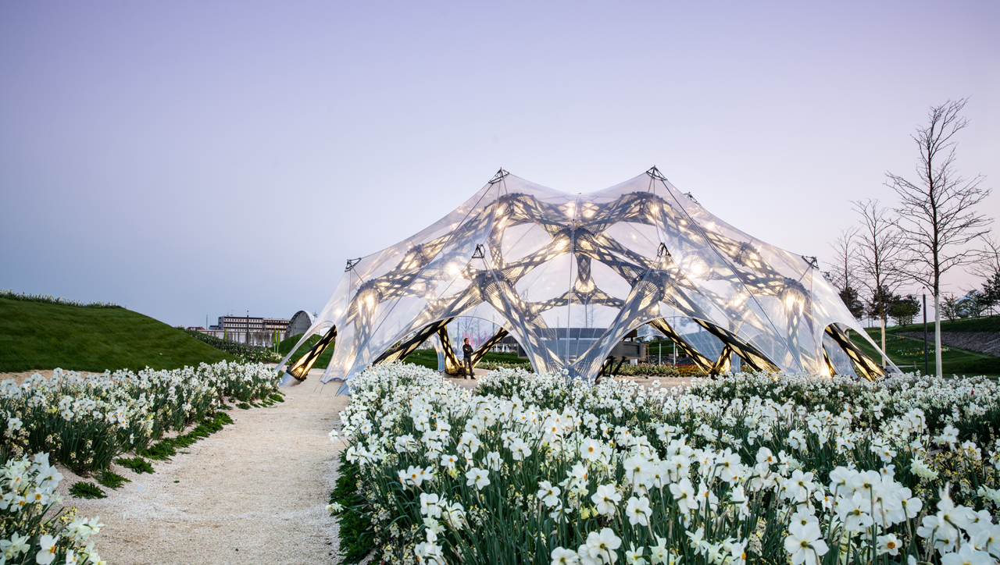
Menges used a system of glass and carbon fibre materials assembeld using robotics to assemble the stunning pavillion dome.
I find this work interesting because the final product is more visually interesting than any other type of architecture,
appearing mroe like a large animal's den than a real building. Additionally, the difficulty aspect of building these
types of things is much higher.